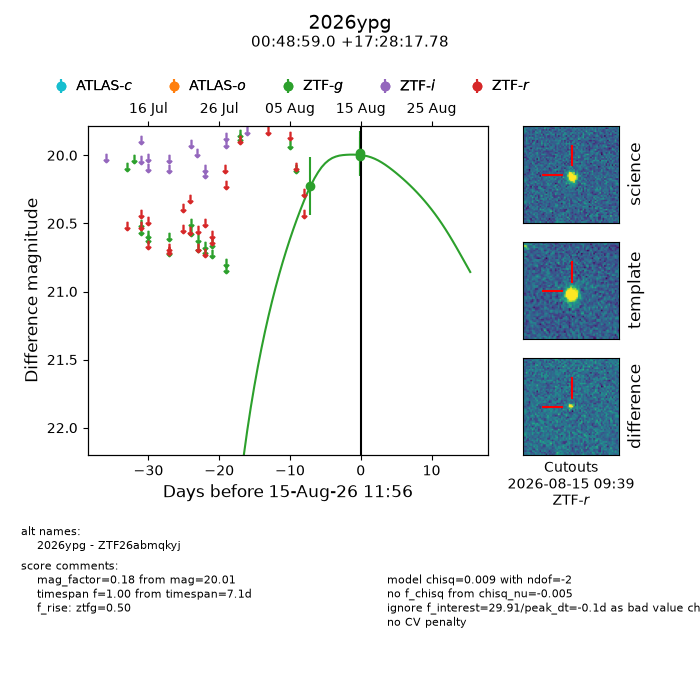
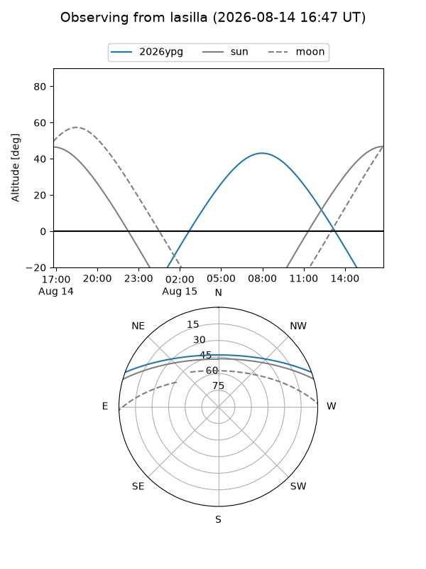
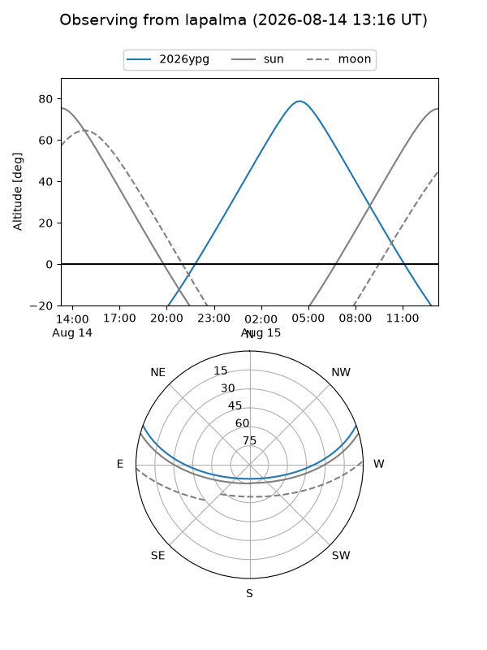
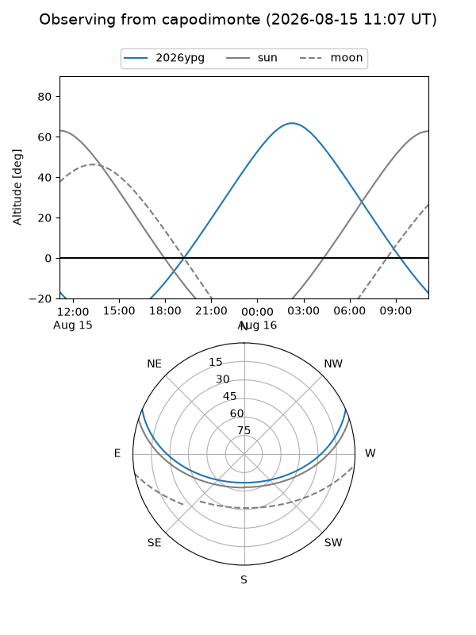
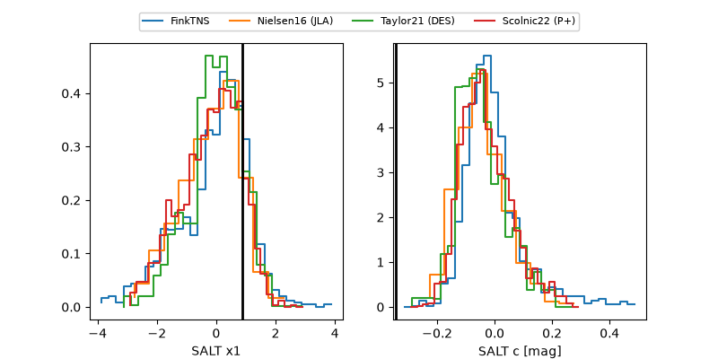

2026ypg
Target 2026ypg at 2026-08-15 11:59
Aliases and brokers:
FINK-ZTF: ztf.fink-portal.org/ZTF26abmqkyj
Lasair-ZTF: lasair-ztf.lsst.ac.uk/objects/ZTF26abmqkyj
ALeRCE-ZTF: alerce.online/object/ZTF26abmqkyj
YSE-PZ: ziggy.ucolick.org/yse/transient_detail/2026ypg
TNS name: wis-tns.org/object/2026ypg
Direct TNS query: direct search
alt names
ZTF26abmqkyj (ztf,fink_ztf)
2026ypg (tns,yse)
Coordinates:
equatorial (ra, dec) = 12.2457,+17.47161
equatorial (HMS+DMS) = 00:48:58.97,+17:28:17.78
galactic (l, b) = (122.0982,-45.39617)
Flags:
TNS type: nan
peak dt: -0.1
Photometry:
last ztfg=20.01
3 ztfg detections
Lightcurve

Visibility



Additional plots
